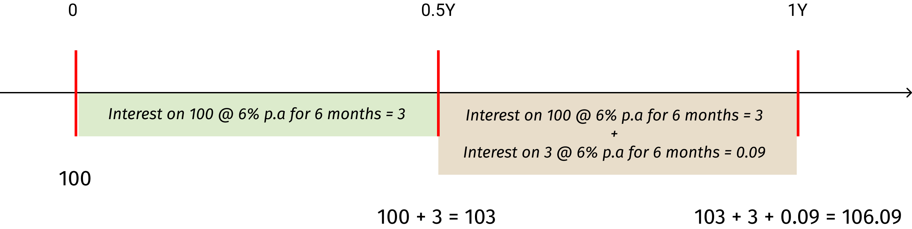
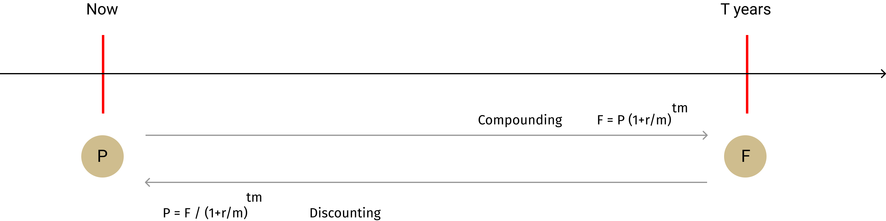

Interest Rate Arithmetic
Interest rate is one of the most important concept in financial economics. Though it is conceptually simple, it's implementation in practice is complex for the following reasons.
- Interest rate is quoted per annum but is settled per period as amount. (computation is necessary for this conversion of rate to amount, which is known as interest rate arithmetic)
- There is no single interest rate. There are multiple interest rates in an economy at any point in time.
The conversion of interest rate into interest amount involves the following.
- Determination of type of interest (simple or compound)
- Payment timing (whether it is paid upfront or in arrears; and whether it is paid monthly, quarterly or at any other frequency)
- Day count convention (determination of the number of days between two dates)
- Business day convention (adjustment of payment date if the payment date falls on a holiday)
Type of Interest and Time Value of Money
Just like any other asset, money can be given on rent, and the rent on money is called as 'interest'. The interest is commonly mentioned as a rate per annum - 5% per annum or 6% per annum, etc. Thus, an amount of 100 lent for a period of one year at 5% interest would become 105 after 1 year.The amount of 100, at the beginning of the year, can be referred to as the "Present Value" and the amount of 105, after 1 year, can be referred to as "Future Value". If we know the present value and the interest rate, we should be able to compute the future value. Similarly, if we know the future value and the interest rate, we should be able to compute the present value. Likewise, if we know the present value and future value, we should be able to compute the interest rate.
We can compute these amounts manually but it is convenient to do it with the help of a formula. The following is the formula to compute simple interest.
\[ F = P \; (1 + R \; \text x \; T) \] where,
F = future value
P = present value or principal
R = interest rate per annum
T = time period of investment
For example,
If P is 100, R is 5% then the following are the future values for some periods.
Future value after 1 year = 100 (1+5/100*1) => 100 (1+0.05*1) => 100(1.05) => 105
Future value after 2 years = 100(1+5/100*2) => 100(1+0.05*2) => 100(1+0.1) => 100(1.1) => 110
Future value after 3 years = 100(1+5/100*3) => 100(1+0.05*3) => 100(1+0.15) => 100(1.15) => 115
In the above example of an investment for 3 years, the interest received at the end of the first year is not considered to have been earning any interest on it for the remaining two years. Similarly, the interest received at the end of the second year is not considered to have been earning any interest for the third year. This concept of not bothering about interest received on interest (or the computation of interest without considering interest on interest) is called as "Simple Interest". But in practice, the interest (or rent) received is invested back and it can get additional interest, a concept called as "Compound Interest".
For example, if we invest $100 for 1 year at an interest rate of 6% per annum, interest payable half-yearly, then we will get $3 at the end of 6 months, another $3 on maturity, and our principal amount of $100. Let us assume that the interest that we received at the end of 6 months is reinvested @6% per annum for 6 months. This would yield us $0.09. Thus, the total amount that we receive on maturity is: 100 (principal) + $3 (interest for first 6 months) + $3 (interest for second 6 months) + $0.09 (interest on $3 invested for 6 months) = $106.09.
The below diagram shows this concept.

In the above example, we computed the compound interest period by period. While this is fine for small periods involving one or two calculations, it is difficult to do that for multiple periods. Luckily, there is a formula available to compute this. The below is the formula.
\[ F = P \; \left(1 + {r \over m}\right)^{t \; \text x \; m} \]
where,
P = principal amount
F = future value
r = annual rate of interest
m = frequency of compounding in a year
t = time period of investment
Using the above formula in our earlier example, we get the following.
\[ F = P \; \left(1 + {r \over m}\right)^{t \; \text x \; m} => 100 \; \left(1 + {0.06 \over 2}\right)^{1 \; \text x \; 2} => 100 \; \left(1 + {0.03}\right)^{2} => 100 \; (1.03)^2 => 100(1.0609) = 106.09 \]
By using inputs such as principal amount, rate of interest, compounding frequency and time period of investments, we were able to compute the future value of our investments. Similarly, given a future value and other inputs, we would be able to compute the present value of our investment, a concept known as "Discounting". The following diagram shows this concept.

In the same example, given our future value of 106.09 and other inputs remaining the same, we would be able to compute the present value as follows.
\[ P = {F \over {(1 + {r \over m})^{t \; \text x \; m}}} => {106.09 \over {(1 + {0.06 \over 2})^{1 \; \text x \; 2}}} => {106.09 \over {(1.03)^2}} => {106.09 \over 1.0609} => 100 \]
The compound interest formula above assumes that the interest received at the end of 6 months is reinvested @ 6% per annum. This is not correct, as we do not know whether the interest rate will be the same after 6 months. If the duration of the investment is 3 years then there will be 5 half-yearly payments that we would receive (we are ignoring the last interest payment that we would receive on maturity) and the formula assumes that all these interest receipts are reinvested @ 6% per annum. This is not a correct assumption because we cannot predict the interest rates at different points in future. This assumption is made for the sake of convenience. The real future value that we actually receive could be different from the value predicted by the above formula.
Continuous Compounding
In the above example of compound interest, the interest is paid once every six months (or half yearly). If the interest is paid only once on maturity then we apply simple interest and our future value would be $106. When we applied compound interest, our future value turned out to be $106.09. What happens if the interest is paid more frequently such as quarterly, monthly, daily or hourly, etc?.In practice, interest is paid either annually, half-yearly, quarterly or monthly but not at more frequently intervals due to operational challenges. But it is worth investigating the results if the interest is paid more frequently, and possibly at the smallest interval possible. Let us run our calculations to find this our. The below are the calculations.
Principal = 100
Rate = 6%
Time or Duration of Investment = 1 year
| Interest Frequency | Frequency in numbers | Calculation | Value |
|---|---|---|---|
| Annually | 1 | 100(1+0.06/1)^1*1 | 106 |
| Half-Yearly | 2 | 100(1+0.06/2)^1*2 | 106.09 |
| Quarterly | 4 | 100(1+0.06/4)^1*4 | 106.1363 |
| Monthly | 12 | 100(1+0.06/12)^1*12 | 106.16778 |
| Daily | 365 | 100(1+0.06/365)^1*365 | 106.183131 |
| Hourly | 8760 | 100(1+0.06/8760)^1*8760 | 106.1836328 |
| Minute | 525600 | 100(1+0.06/525600)^1*525600 | 106.18365429 |
| Second | 31536000 | 100(1+0.06/31536000)^1*31536000 | 106.183654275 |
As we can see the future value when compounded more frequently increases but it does not increase much. It increases only in a few decimal points. This can be visible seen from the below diagram.

In our example, the principal amount invested was $100 and the rate of interest was 6%. To generalize this concept so as to use it in various scenarios, we can consider the principal amount as a single unit amount of $1 and the rate of interest as 100%. In otherwords, we would want to consider the effect of a $1 investment which is compounded continously at a 100% rate. The following are the calculations.
| Frequency | Frequency in numbers | Calculation | Value |
|---|---|---|---|
| Annually | 1 | 1(1+1/1)^1*1 | 2 |
| Half-yearly | 2 | 1(1+1/2)^1*2 | 2.25 |
| Quarterly | 4 | 1(1+1/4)^1*4 | 2.441 |
| Monthly | 12 | 1(1+1/12)^1*12 | 2.6130 |
| Daily | 365 | 1(1+1/365)^1*365 | 2.71456 |
| Hourly | 8760 | 1(1+1/8760)^1*8760 | 2.718126 |
| Minute | 525600 | 1(1+1/525600)^1*525600 | 2.7182792 |
| Second | 31536000 | 1(1+1/31536000)^1*31536000 | 2.71828178 |
We can continue our calculations to further smaller frequencies but it would not yield us better results. We can see that the future value continues to grow but only in a small way in decimals. For all practical purposes in finance, we can consider the first 5 digits and ignore the rest of the digits. So, we can say that our $1 investment at a rate of 100% per annum has approached a four digit limit of 2.7182. All further growth in value is in further decimals from this point only. This limit of exponential growth is termed as "e" and is the basis for continous compounded calculations in many aspects of finance.
One can argue that we are considering a growth rate of 100% to find the above limit but what happens if we consider a 1000% growth rate or even higher growth rates. Well! the answer is that we do not have to consider a higher growth rate for the following reason. We started with $1. We are assuming that our $1 will double itself and become $2 after a small time interval. The question is what will be the exponential limit if it becomes $50 or $1000 or any other value instead of $2. To reach $50 or $1000 or any other value, it will have to first reach and then surpass the value of $2. Our frequency is not seconds but infinitesimally small (the smallest interval possible or measurable). If $1 becomes $50 after a small time interval say "x", then there is always the possibility that it reached $2 first at some fraction of "x". Therefore, we do not have to consider higher growth rates as the growth rate of 100% is always the maximum possible at an infinitesimally small fraction of time.
Using the concept of continous compounding, we can find the future value of any investment by the following formula.
\[ F = Pe^{rt} \]
where,
F = future value
P = present value
e = the exponential value of 2.7182
r = the rate of return that we are expecting on our investment
t = time period of our investment
Using the above formula, in our example, we get.
\[ F = 100 \; \text x \; 2.7182^{0.06 \; \text x \; 1} => 100 \; \text x \; 1.061836 => 106.1836 \]
Payment Frequency
Different securities pay interest at different frequencies. The following table shows some common instruments and thier payment frequencies.| Market Category | Product | Frequency |
|---|---|---|
| Cash | Money market | Once at maturity |
| Zero-coupon bonds | Once at maturity | |
| Sovereign bonds - France ("OATS") | Annual | |
| Sovereign bonds - Germany ("Bunds") | Annual | |
| Sovereign bonds - US ("Treasuries") | Semiannual | |
| Sovereign bonds - UK ("Gilts") | Semiannual | |
| Sovereign bonds - Japan ("JGB") | Semiannual | |
| Sovereign bonds - India ("G-Secs") | Semiannual | |
| Eurobonds | Annual | |
| US corporate bonds - fixed rate | Annual or Semiannual | |
| US corporate bonds - floating | Quarterly (mostly) | |
| Mortgages and bank loans | Monthly | |
| Some US municipal bonds | Weekly | |
| Derivatives | Interest rate swap in USD | Semiannual for fixed leg; and quarterly or semiannual for floating leg |
| Interest rate swap in EUR | Annual for fixed leg; and semiannual for floating leg | |
| Interest rate swap in CHF | Annual for fixed leg; and semiannual for floating leg | |
| Interest rate swap in GBP | Semiannual for both fixed and floating legs | |
| Interest rate swap in JPY | Semiannual for both fixed and floating legs |
When there are two identical securities paying same notional interest rate but on different payment frequencies, their returns will differ. For example, consider Security A paying 6% p.a with annual interest payment and Security B paying 6% p.a with semi-annual interest payment. The returns that we get from Security B would be better because we can reinvest the interest that we receive semi-annually and earn some interest on it. We have already discussed this in the topic 'compound interest' above. If we want to compare the rates with different payment frequencies then we must bring them to an equal footing for comparison. There are two ways of doing this - 1) Effective Annual Rate (EAR); and 2) Continous Compunded Rate (CAR). We have already discussed the concept of Continous Compounding earlier. The following paragraphs discuss the Effective Annual Rate.
Effective Annual Rate (EAR)
Effective annual rate is the rate with single payment in an year. If the payment frequency is more than once a year, such frequencies can be restated as equivalent EAR. The EAR can be computed using the following formula.\[ EAR = (1 + {r \over m})^m - 1 \]
where,
r = annualised interest rate
m = frequency of payment of interest
The following table shows the EAR for different payment frequencies for an instrument.
| Frequency | Calculation | Value |
|---|---|---|
| Half-yearly | (1+0.06/2)^2 - 1 | 6.09% |
| Quarterly | (1+0.06/4)^4 - 1 | 6.14% |
| Monthly | (1+0.06/12)^12 - 1 | 6.17% |
| Weekly | (1+0.06/52)^52-1 | 6.18% |
Payment Timing
There are two types of markets - money market and bond markets. In bond markets, the interest rate is always mentiond and is relatively easy to calculate the yield if current prices are known. In money markets, however, the instruments are issued either in yield or discount basis. Both the yield and discount basis or instruments are issued at a discount to the face value (i.e. for example, they are issued at 95 and redeemed at 100). The terms "yield" or "discount" here refer to the way the interest rate is derived. In case of discount instruments, a discount rate is given which is applied to the future value to arrive at the current price of the instrument; for yield instruments, the issuer mentions a yield that the instrument pays. Both these rates have different meanings. The following paragraphs discuss how they are computed and thier differences.The below table shows the features of money market instruments.
| Instrument type | Feature | Examples |
|---|---|---|
| Yield instrument | Interest is quoted and is paid on accural basis | Repos, Securities Lending, Margin Lending, Bonds, etc. |
| Discount instruments | Interest is not quoted. Issued at a discount to the future value | Treasury bills, Commercial papers, Banker's Acceptance, etc. |
Calculation of interest rate for money market instruments
As indicated above, instruments in the money markets can be on discount basis or yield basis. For discount instruments issued in the money market, the interest rate is applied to the future value and is called as "discount rate". For yield instruments issued in the money markets, the interest rate is applied to the future value and is called as "investment yield". The following shows the calculation for both.
The discount instruments do not state a interest rate, instead they give a discount rate that is applicable on the future value. The interest rate has to be calculated. The calculation can be done using the following formula.
\[ P = F \; \left(1-{d*n \over 360}\right) \] where,
P = present value
F = future value
n = number of days to maturity.
360 = is the denominator assuming there are 360 days in a year. For USD, EUR and CHF money markets, 360 is used. For other markets, 365 is used.
d = discount rate
Note: The discount rate is a rate applied on the Future Value (Par Value) not on the Current Price (Principal).
For Example
Consider a U.S. Treasury Bill having a 91 days maturity and future value of 100. If the current price is 99, what is the discount rate?
\[ 99 = 100 \left(1- {d * 91 \over 360}\right) => \left(360 - 91d \over 360\right) = {99 \over 100} => 360 - 91d = 356.40 => 91d = 3.6 => d = 0.03956 \; or \; 3.956 \text % \]
If we know the current price of the instrument then we can calculate the interest rate or vice-versa. In general, we do not know the current price. We are given the discount rate and we would be required to price the current value at which we can purchase the instrument. In the above example, we would be told that an instrument with face value of 100 is selling at a discount of 3.956%. By using the same formula, we should be able to calculate the current price of the instrument.
For yield instruments, a yield is states that is applicable on the future value. The formula for interest rate calculation is different as follows.
\[ P = {F \over \left(1 + {{y \; \text x \; n} \over 360} \right)} \]
where,
P = present value
F = future value
y = investment yield (this is the yield which is applied to the future value)
n = number of days to maturity
For Example
Consider a Certificate of Deposit having a 91 days maturity and future value of 100. If the current price is 99, what is the yield?
By using the above formula, we can compute the yield as follows.
\[ 99 = {100 \over \left(1 + {\text x \; * \; 91 \over 360} \right)} => 99 = {100 \over \left(1 + 0.25 \text x \right)} => 99(1+0.25x) = 100 => 99 + 24.75x = 100 => 24.75x = 1 => or \; x = 0.040404 \; or \; 4.04 \text%. \]
In the above example, we knew the current price and hence we were able to compute the investment yield. But if we know the investment rate, we would be able to compute the current price.
Though there are two different types of instruments (discount and yield) in money markets, they both are not the same. There is a difference. Let us consider the following example.
Difference between discount and yield instrument
Let us consider a US Treasury Bill and a Certificate of Deposit (CD) having the same maturity of 91 days and the same future value of 100. Let us further assume that the US treasury bill (a discount instrument) is quoted a 3% and the CD (a yield instrument) is also quoted a 3%. What are their prices and which one will give the higher return on our investment?
The prices are as follows.
\[ For \; Treasury \; Bill: P = 100 \left(1 - {0.03 \; \text x \; 91 \over 360}\right) => 99.2417 \]
\[ For \; Certificate \; of \; Deposit: P = {100 \over 1 + {0.03 * 91 \over 360}} => 99.2474 \]
As you can see, for the same nominal rate, discount rate results in higher return than money market yield. In the above example, an initial investment of 99.2417 has growth to 100 after 91 days for Treasury bill, while an initial investment of 99.2474 has grown to 100 after 91 days for CD. In terms of returns, the return on investment is:
\[ Return \; from \; treasury \; bill = {(100-99.2417) \over 99.2417} \; \text x \; 100 \; \text x \; {360 \over 91} => 3.0219 \text % \]
\[ Return \; from \; certificate \; of \; deposit = {(100-99.2474) \over 99.2474} \; \text x \; 100 \; \text x \; {360 \over 91} => 2.9998 \text % \]
Day Count Fraction
As discussed earlier, the market convention is that interest rate is quoted per annum but settled as amount for period. In formula terms, it is;\[ Interest \; Amount = Principal \; \text x \; Rate \; \text x \; Period \] where,
period is expressed as:
\[ Period = {Number \; of \; days \; in \; accrual \; period \over Number \; of \; days \; in \; a \; year} \]
Day count fraction is also known as follows:
1) As per ISDA documentation = "Day count fraction (DCF)";
2) As per ICMA documentation = "Day count basis (DCB)"; and
3) As per ACI documentation for Forex = the numerator is called "day count" and the denominator is called "annual basis".
There are more than a dozen conventions on DCF. They can be grouped as follows.
| Category | Explanation | Conventions |
|---|---|---|
| Actual/Constant | For the numerator, count the actual number of days; and for denominator, assume a constant number of days | 1) Actual/360 2) Actual/365 Fixed |
| Actual/Actual | Both for numerator and denominator, count the actual number of days. | 3) Actual/Actual ISDA 4) Actual/Actual ICMA 5) Actual/Actual AFB 6) Actual/Actual L |
| 30/360 | Every month has uniformly 30 days so that full year will have 360 days | 7) 30E/360 8) 30/360 9) 30E/360 ISDA |
The above are recognised by ISDA. In addition to the above, the following other conventions are also used.
| Category | Conventions |
|---|---|
| 30/360 | 10) 30/360 SIA 11) 30/360 SIFMA 12) 30/360 German |
| Others | 13) 30E+ /360 14) Actual/365 Japan 15) BUS/252 |
Actual/360
It is used in the following markets.- money market transactions of in both domestic and eurocurrency markets of USD and CHF.
For the denominator, use the constant of 360 for both leap and normal year (non-leap year).
Actual/365 Fixed
It is used in the following markets:- money market transactions of both domestic and eurocurrency markets in GBP currency
- domestic money and bond markets of JPY, AUD, NZD, CAD, SGD, HKD, ZAR and INR
For the denominator, use the constant of 365 for both leap and non-leap years.
Actual/Actual ISDA
This is not commonly used in any markets.The calculation of day-count fraction under this method is a bit complex. The following shows the calculation.
| Condition | Explanation |
|---|---|
| If the entire accrual period is in non-leap year | count the actual number of days for the numerator; and use 365 for the denominator |
| If the entire accural period is in a leap year | count the actual number of days for the numerator; and use 366 for the denominator |
| If the period falls both in leap and non-leap year | divide the period into leap and non-leap part. for the non-leap part, use 365 as denominator; and for the leap part, use 366 as denominator |
Actual/Actual ICMA
It is used in the following markets.- US treasury notes and bonds
- All EUR denominated bonds
- UK gilts; and
- USD-denominated straight and convertible bonds issued in Eurocurrency market
For the denominator, use the actual number of days in the full coupon period, and NOT the full year.
In terms of the fraction, it is as below.
\[ Day \; count \; fraction = {Actual \; number \; of \; days \; in \; the \; accrual \; period \over Actual \; number \; of \; days \; in \; coupon \; period \; \text x \; coupon \; frequency} \]
Actual/Actual AFB
It is used in the following markets.- Interest rate derivatives market governed by French Master Agreement
For the denominator, use 366 if there is February 29 in the accrual period; else, use 365.
Actual/365 L or Actual/365 Sterling
It is used in the following markets.- Floating rate notes on Europounds market
For the denominator, use 365 for normal years, and 366 for leap years.
30E/360
It is used in the following markets.- For straight and convetible bonds issued in Eurocurrency markets
If the day of Start date or End date is 31, it is arbitrarily changed to 30.
Under this method, the day count fraction can be computed by using the following formula.
\[ (Y_2 - Y_1) * 360 + (M_2 - M_1) * 30 + (D_2 - D_1) \over 360 \]
The shortening of the month has the following consequences.
| Scenario | Consequence |
|---|---|
| Day of Start Date and End Date is not the last day of the month | Every half year will have 180 days and every year, 360 days. For Example: Mar 15, 2019 - Sep 15, 2019: 180 days Mar 15, 2019 - Mar 15, 2020: 360 days |
| All dates fall on the last day of month; and day of start date is not the last day of February | Half year will have more than 180 days but full year from Start date will have 360 days except when: (a) day of start date is in leap year; full year will have 359 days; and (b) day of end date is in leap year; full year will have 361 days. For Example:
|
| All dates fall on the last day of money; and day of end date is the last day of February | Half year will have less than 180 days but full year from start date will have 360 days except when: a) day of end date is in leap year; full year will have 361 days; and b) day of start date is in leap year; full year will have 359 days. For Example
|
30/360
It assumes that a month has 30 days and the full year has 360 days. The day count factor is computed as follows.\[ (Y_2 - Y_1) * 360 + (M_2 - M_1) * 30 + (D_2 - D_1) \over 360 \]
30/360 bond basis or 30/360 US Muni
It is used in the following markets.- Corporate bonds, municipal bonds and some agency bonds in the US
- If the day of start date is 31, change it to 30; and
- If the day of end date is 31, change it to 30 only if the adjusted day of start date is 30 (Otherwise, do not shortern but retain it as 31).
30/360 German
It is used in the following markets.- It is used by SIX Exchange for secondary market trades in CHF-deonominated non-convertible bonds and Swiss government bonds issued after April 1999
30/360 SIA
It is used in the following markets.- US corporate bonds only when the payment date falls on end-of-month.
- If the day of start date is 31 or the last day of Feb, change the date to 30.
- If the day of the end date is 31 or the last day of Feb, change it to 30 only if the day of start date after adjustment in the previous step is 30; otherwise do not change it.
30E/360 ISDA
It is like 30/360 German except that no adjustment is made to the day of end date.- If the day of start date is 31 or the last date of Feb, change it to 30; and
- If the day of the start date is 31 or the last day of Feb, change it to 30 unless it is the Termination Date, in which case, do not change the end date.
Actual / 365 Japan
In this convention, the numerator (i.e. accrual period) is the actual number of days except when the accrual period contains Feb 29 in which case the accrual period is reduced by one day. The denominator is 365 in all cases.BUS/252
It is used in the following markets.- Brazilian Real (BRL) derivatives market
For numerator, it counts the number of business days instead of calendar days and therefore excludes Saturdays, Sundays and other scheduled holidays.
For denominator, it uses 252 as a constant, which is the assumed number of business days in a year.
Business Day Convention
It refers to the convention as to how a date should be adjusted when it falls on a holiday. It is defined with respect to a business center such as London Business Day, New York Business Day, Tokyo Business Day, etc. Sometimes, it is defined with respect to two or more business days also.Before we understand the various conventions, it is important to note the different dates in the life of a derivatives contract.
| Date | Purpose |
|---|---|
| Period End Date | It is the date from which interest accrual is computed until the next such date. It can be holiday since interest can be accrued to holiday |
| Reset Date | It is the date on which floating interest rate is set to the trade and can be a holiday. |
| Payment Date | It is the date on which payment is made and cannot be a holiday |
| Fixing Date or Valuation Date | It is the date on which the rate or price is obtained from the market and cannot be a holiday |
The following conventions are defined by various ISDA definitions.
| Definitions | Business Day Conventions |
|---|---|
| 2000 and 2006 definitions | Unadjusted Day (i.e. no adjustment) Preceding Day Following Day Modified Following Day FRN Convention |
| 1998 FX and Currency Options Definitions | Nearest Day (which is rarely used even in forex market to which the definitions apply) |